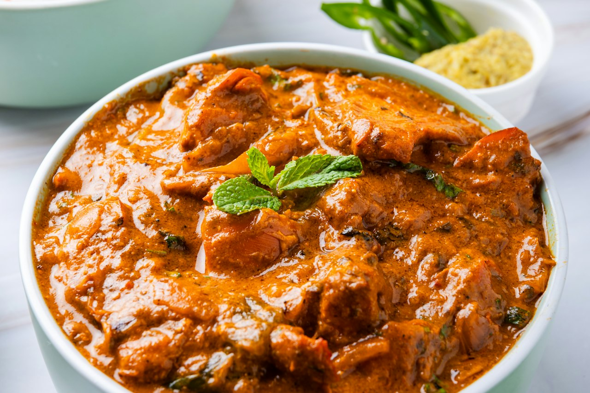

Butter Chicken (WIP)
Yogurt-marinated chicken in a spiced tomato-cream sauce. Good but not yet dialed in — currently runs too acidic. Next attempt: cashew paste and a pinch of sugar to balance. The marinade is solid; the sauce needs refinement.
Indian · High Protein · Dinner · Meal Prep · Work In Progress

575kcal
62gprotein
Makes 3 servings. Whole batch: 1725 kcal, 186g protein.
Still dialing this one in. Cook it, but read the notes first.
Ingredients
- Marinade
- Sauce
Steps
- Marinate chicken overnight — combine all marinade ingredients, coat chicken thoroughly, refrigerate.
- Cook marinated chicken in a screaming hot cast iron or under broiler until charred in spots. Set aside. Do not skip the char.
- In a wide pan, cook onion in 1 tbsp butter + oil over medium until deeply golden, 12-15 min minimum.
- Add garlic, ginger, cook 2 min.
- Add tomato paste, cook until darkened, 2 min.
- Add dry spices, toast 60 seconds.
- Add crushed tomatoes and pinch of sugar. Simmer 20-25 min until thickened and oil begins to separate.
- Blend sauce smooth with immersion blender.
- Stir in blended cottage cheese and cashew paste.
- Add charred chicken, simmer together 10-15 min.
- Stir in heavy cream and bone broth powder, simmer gently 5 min.
- Finish with cold butter off heat and kasuri methi.
- Adjust salt and serve.
WORK IN PROGRESS. Current issue: sauce runs too acidic/tomatoey. Fixes to try next time: (1) cashew paste — soak 1/4 cup raw cashews, blend smooth, add before cream; (2) pinch of sugar during tomato simmer; (3) San Marzano tomatoes instead of regular crushed; (4) longer tomato simmer before blending. The marinade is solid and does not need changes. The char step is non-negotiable. Milk and cream do not fix acidity — they only thin the sauce.